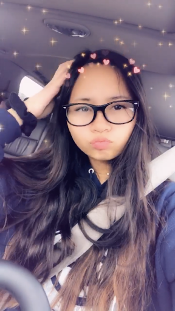

Best Friends For Life
Have you ever found someone? Someone who is one of your favorite people in the world? Someone who you're pretty sure she/he is you soulmate but in a friend way? The person who will be there through all your achievements, heartbreaks, bad decisons, life outcomes, and just someone who never left you when they were given a million chances to? If you are those lucky people who found someone who will help you grow to the person you have always dreamed of being, don't ever take them for granted.
I am very lucky to have my best friend forever, Lyan Dela Cruz. She was, and still is, always there for me ever since the day we met, the first day of 2nd grade. Right when I saw her, even though we were instictively nervous and a bit shy, we clicked. Ever since then, we were, and still are, very inseparable despite the 750.1 miles that may challenge Lyan's and my friendship.
4th grade was the last time I was able to actually spend some quality time with Lyan, since my family and I had to move from San Diego, California to Salt Lake City, Utah. One of the things I was very afraid of was that when I moved, everyone would forget about me and all of my friends and I would disconnect. Eventually, all of my friends and I stopped talking for no reason. What surprised, yet at the same time didn't surprise me, was that Lyan was the only person that still constantly kept in touch. We would try to break the barrier by our daily texts, video chats, and by social media. For almost 5 years and counting, we never let distance stand in our way.
Trust me, long-distance relationships are one of the hardest things I have ever had to deal with. It was easier when Lyan and I were in the same school, linking arms and alwys having each others back no matter what. We are able to physically comfort each other when we were going through very hard times in our personal lives, and in the very rare misunderstandings we had. Even though we text everyday and spill the tea, we aren't physically there to see how the exact situation is to better understand what the other person is exactly going through. But, that has never stopped us from being there for each other.
Ever since the beginning, Lyan and I have always understood each other to the point that no one else could every understnad us; it is as if we were actually twins (which is what we think of each other). In our daily routine of texting and just telling each other problems and how our day went after 7 years in total, to this day we are surprised that we go through almost the exact situations; it is as if the universe is giving us all these situations at the same time for us to have someone who can truly understand what we are going through, someone who can truly relate.
She is one of the most important people in my life, she is one of my sources of happiness. We always look to each other for support, advice, comfort, and someone who will listen to us. She accepts me at my worst, and maes me feel loved and gorgeous at my best. Shw knows exactly what to say to calm me down, or at least make me feel better.
Why I love Lyan
Lyan and I understand each other to a level that no one could ever reach, and we know each other's life story so well that we could even write a biography of each other. None of my other friends could ever compare to Lyan and certainly no one could ever replace her. Sometimes she forgets how amazingly wonderful she is, so Lyan if you are reading this, I want you to remember some of the reasons why I love you. I love you because:
- You love me unconditionally
- You accept me even at my worst and never left my side
- We made it through "that stage" together
- You've encouraged me every day to remember that I am not who I was
- We say the same thing at the same time;it's like we actually have twin telepahy not even kidding
- You are a very strong person; i look up to you
- You listen to me(all my rproblems and what I have to say)
- You can handle me when I am out of control or crazy
- I trust you with all my deep secrets, and you trust me with yours
- I never hesitate to tell you something because I know 100% that you will take it to your grave
- We help each other work on parts of our personality that we want to change
- We never use each other's weaknesses to our advantage
- You support my relationships and all my decisions
- I am never afraid to be honest with you, and you are never afraid to be honest with me, even if the truth may hurt
- You know how to cheer me up when I feel sad
- You go out of your way to help me when I need it
- You are always looking out for me
- You are THE best at giving advice
- You care and love my family
- You can sense what I am feeling even when I haven't told you directly yet
- We rarely fight (we never really fought we just had one misunderstanding in 2nd grade about L-Man)
- You believe that I deserve the best, and I believe that you deserve the best
- We get sassy and dramatic together and never get annoyed by it
- We help each other climb to the top wihtout sabotaging each other
Conclusion
Lyan is one of the most important people in my life; she is one of my main sources of happiness. We look to each other for comfort and I cannot live without her. Lyan and I have an unbreakable bond that even the greatest of trials could never get in the way of our friendship. She is my soul sister and I could never imagine how life would be like if I never met her.I hope that everytime you feel sad, everytime that you aren't in the mood, you will look back at this and smile a real smile. You are my beautiful sister, twin, and best wing-woman. I love you so much.
Written by Lana Dianelle R. Natividad